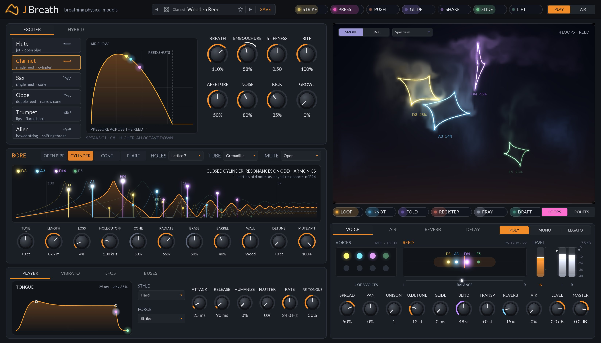
This is a working draft written against JBreath 0.13.3.
Chapters 2 and 3 get you installed and playing in a few minutes. Chapter 4 tours the panel, and Chapters 5 to 7 explain how the sound is made, what each instrument is and how you blow it, which is the quickest way to understand what every control does. Chapters 8 to 14 cover every control in the order they sit on the panel, and Chapters 15 and 16 the presets, the dice and some recipes. The appendix lists every parameter with its exact range and default, plus specifications and troubleshooting.
Throughout the manual, control names are set in bold and panel labels as they appear on screen, such as EMBOUCHURE. Tags beside a parameter mean:
An eight-voice MPE wind instrument built from physical models. You don't play a recording of a flute: you blow one.
Most wind instruments in a computer are samples, a fixed recording for each note at a few dynamics. JBreath has no samples at all. Each voice is a bore, a delay line that carries the sound down the tube and back with the losses and reflections of the real one, driven by an exciter: the reed, the lips, the air jet or the vocal folds that the player blows into. Blow harder and the reed slams shut for more of each cycle, the trumpet's wave steepens into a blare, the flute's jet jumps up a register. Nothing is crossfaded: the brightness, the growl and the split notes come out of the physics.
Six instruments share the engine: flute, clarinet, sax, oboe, trumpet, and an alien that sings words, a syllable a note. Around them sits a model of the player (the tongue, the vibrato, a hand on the bell), a second subtractive voice you can layer underneath, a modulation system read off the instrument's own breath, and a stage where every voice is drawn live as a glowing loop of its own sound, puffing smoke as it blows.
JBreath is made for expressive controllers. With an MPE keyboard or a breath controller every note has its own breath, bend and embouchure, so a chord can swell one note at a time. With a plain keyboard it still plays: the velocity blows the note.
The single biggest difference from a synth is that the breath is a continuous control, not an envelope. If your controller sends pressure, use it: hold a note and lean into it, and listen to the tone change with the level. Chapter 7 shows how to set it up.
JBreath is a CLAP instrument. It ships in the JClap bundle alongside the other JClap plug-ins.
| Plug-in format | CLAP 1.2 (instrument, stereo out, MPE). Your host must support CLAP, for example Bitwig Studio, REAPER, FL Studio or Studio One. JBreath is CLAP only: there is no VST3 or AU version. |
| macOS | Universal binary: macOS 10.15 or later on Intel, 11 or later on Apple Silicon. |
| Windows | 64-bit Windows. |
| Linux | 64-bit, X11. |
| Controller | Any MIDI keyboard. An MPE controller (Linnstrument, Seaboard, Osmose, Continuum and the like) or a breath controller on CC 2 makes it far more expressive. |
| macOS | ~/Library/Audio/Plug-Ins/CLAP |
| Windows | C:\Program Files\Common Files\CLAP |
| Linux | ~/.clap |
The plug-ins are ad-hoc signed but not notarized, so macOS quarantines files downloaded through a web browser and some hosts (Bitwig among them) silently skip them. The simplest install is from Terminal, which fetches the latest release and installs every JClap plug-in:
curl -fsSL https://raw.githubusercontent.com/jeffmhopkins/Jclap/main/install-macos.sh | bash
If you already downloaded with a browser, clear the flag once after copying:
xattr -dr com.apple.quarantine ~/Library/Audio/Plug-Ins/CLAP/*.clap
Put JBreath on an instrument track and route your controller to it. For MPE, the host must pass MPE through to the plug-in: in Bitwig, JBreath declares MPE support and receives it with no extra setup; in REAPER, set the track's MIDI input to All channels. JBreath listens for a lower MPE zone (channel 1 the manager, 2 to 16 the notes) and follows an MPE Configuration Message if your controller sends one. It also accepts CLAP note expressions, so a host that edits per-note pressure, tuning and brightness in its piano roll plays it directly.
Ableton Live is not supported. Live does not load CLAP plug-ins, and JBreath is CLAP only. If you use Live alongside a CLAP host, play JBreath in the CLAP host and bring the audio into Live.
JBreath reports its tail to the host (the release, the room and the delay), so hosts that stop processing silent tracks let it ring out.
Five minutes from an empty instrument track to a horn that breathes.
Every control has a tooltip, and so does every source chip. Hover over anything on the panel for a one-line reminder of what it does.
The instrument on the left, how it's played along the bottom, and the breath loops on the right.
Every knob, switch and menu is a host parameter, so everything can be automated, and most knobs also accept CLAP parameter modulation from the host, per note. Knobs work the same everywhere on the panel:
| Action | On a knob |
|---|---|
| Drag up / down | Change the value. A popup shows the value while you drag. |
| Shift + drag | Fine adjustment. |
| Scroll wheel | Step the value up or down. |
| Double-click | Reset to the default value. |
| Right-click | Menu with Reset to default and Enter value… to type an exact number. |
Each knob draws its value as an arc. When a route or the host is moving it, an outer ring shows how far, live, in the source's colour (Chapter 11).
Each sounding note keeps one colour across the whole panel, by the voice playing it: its loop, its smoke and its label on the stage, its partials on the bore graph, its dot on the air flow graph, the tongue and press curves, the hybrid's filter, and its place in the stereo field on the VOICE tab. Play a chord and you can follow each note through every card. The Colours menu above the stage picks the scheme the colours come from (Chapter 13).
The panel is 1648 × 940 at 100%. Right-click any empty part of the panel and choose UI Size to scale it. The size you pick is remembered the next time the editor opens. The same menu has Check for Updates.
A player, a valve and a tube. The player blows, the valve turns the steady breath into pulses, and the tube decides which pulses ring.
Every note gets its own voice: its own breath, its own exciter and its own bore. The voices are summed, then pass through the shared effects to the output.
Each note's breath starts from its source: pressure, a breath controller, the velocity or the BREATH IN parameter (Chapter 7). CURVE shapes it. The tongue then shapes the start and end of the note: a burst of pressure as the tongue lets the air go (KICK), the ATTACK and RELEASE, and the flutter or re-tonguing through the note. Vibrato rides on the breath, the jaw, or both. The result is a mouth pressure that changes every sample, and that is all the exciter knows about the player.
The exciter is a valve the breath blows through: a reed, the lips, or the air jet over the flute's embouchure hole. How much air it lets through depends on the pressure across it, which depends on the sound already in the bore. The bore is a pair of delay lines carrying the wave down the tube and back, losing a little and reflecting at the bell and the open tone holes. Each trip round the loop, the bore's resonances pull the valve into opening and closing at their frequency, and a note sounds. Nothing in this loop is a waveform or an envelope: soft playing is nearly a pure tone because the valve barely closes, and the buzz at forte is the valve slamming shut.
That is why changing the bore changes everything: LOSS makes notes speak slower and darker because the resonances are weaker, HOLES changes which highs escape, and a MUTE changes the bell.
The bore length for each model and note was measured offline, by playing it and correcting the length until the pitch was within a cent, and baked into the plug-in with a gain that levels each note and the softest breath that sounds it. A real player keeps a note in tune as they blow harder; JBreath measures how far each instrument drifts with the breath and corrects the bore for it. Notes past an instrument's range play an octave (or more) in.
The voices run at 88.2 kHz or more (twice the host's rate at 44.1 and 48 kHz) and are decimated once at the output, which keeps the reeds stable and the highs clean. At 88.2 kHz and above they run at the host's rate.
The factory preset at the head of each family (Concert Flute, Wooden Reed, Clean Alto, Dusk Oboe, Brass Plume, First Contact) is the model with a player's vibrato and a little room: the sound the instrument was tuned to. Start there before reaching for the extreme settings.
Six exciters, six bores. Pick one from the list on the exciter card.
| Instrument | Exciter | Bore | What gives it its sound |
|---|---|---|---|
| Flute | An air jet crossing the embouchure hole, split in or out of the pipe by the sound in it. | Open at both ends: every harmonic. | The jet takes longer to reach the edge when it's slow, so blowing harder pushes it up a register. Edge noise. Nearly pure when soft, a strong 2nd and then 3rd harmonic as it's blown harder. |
| Clarinet | A single reed: a pressure-controlled valve, solved each sample with the pressure it makes. | A cylinder closed at the reed: odd harmonics. | The reed slamming shut at forte; the bell letting the highs out. |
| Sax | A cane reed: a mass on a spring under the lip, pushed shut by the mouth pressure, beating on the lay at forte. | A real alto's air column, computed from its shape for each fingering: mouthpiece, conical body, nineteen tone holes, octave vents. Below the alto, the tenor, baritone and bass (tuned down to the contrabass, it plays the bass sax). | Nearly a pure tone played softly, filling in to a buzzing forte over about 12 dB, as the Iowa alto does. Low notes hold their fundamental under rich harmonics. Growl when it's pushed. |
| Oboe | A small, stiff double reed. | A narrow cone, built as two waveguides meeting at the reed (the bore, and a short pipe for the cone's missing tip), so its resonances are the note's harmonics; the cor anglais and lower horns below its range, down to the contrabassoon. | Nasal and reedy, with a formant near 1.8 kHz, fitted to recordings of a real oboe; darker played softly. Light on CPU. |
| Trumpet | The lips: a mass on a spring blown open by the mouth pressure. | A real Bb trumpet's air column for each of its seven valve combinations: mouthpiece, leadpipe, valves, Bessel bell. | The wave steepening on its way down the horn, towards a shock at forte: the brassy blare. Mellow played softly. Each tongued note scoops up into its pitch as the lips find the resonance. |
| Alien | Vocal folds, a pulse opening and snapping shut each period, or a bowed string. | A throat, nose and mouth: a formant synthesizer. | Every note a syllable of its words, typed or its own made-up language (Chapter 12). |
The sax and trumpet are measured against the University of Iowa's recordings of a real alto sax and Bb trumpet at pp, mf and ff, and the sax's low register against UNSW's tenor sax: how their tone darkens and how much quieter they get when played softly, how far a note starts under its pitch, and the slow 1 to 3 cent wander of a real player's pitch. The trumpet's tone through its bell is matched harmonic by harmonic without any per-note EQ: it brightens as it's blown harder because its lips close for more of each cycle. Every instrument's breath noise is a smaller share of the sound the softer it's blown.
Under the instrument list the panel shows the range the model speaks in, for example Speaks C1 – C8 · past that, an octave in on the clarinet. Notes outside it are played an octave (or more) inside the range rather than failing to sound. Use TRANSP on the voice card, or the presets' relatives (Piccolo, Bass Clarinet, Baritone, Cor Anglais) to move the range.
Choosing an instrument keeps every other setting, so the same breath, bore and player can be heard through each one. Some bore knobs only apply to some instruments (CONE to the sax, oboe and trumpet, BRASS to the trumpet): they are dimmed on the others. To start an instrument from its natural sound, load the first preset in its family instead.
Where each note's breath comes from, and how your controller's hands reach the instrument.
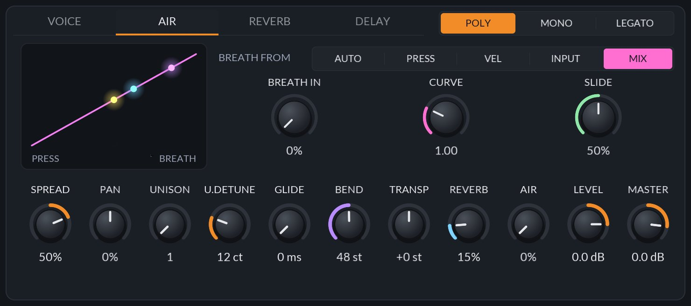
| Setting | Breath comes from | Use it for | |
|---|---|---|---|
| AUTO | Velocity, until pressure or Breath In arrives | The default. Plays from a plain keyboard and from an MPE or breath controller alike. Once pressure arrives it follows it within a few milliseconds, and velocity is then only how hard the note is tongued. | |
| PRESS | Pressure only | MPE controllers and breath controllers, when you never want velocity to blow. | |
| VEL | Velocity only | A plain keyboard, or a controller whose aftertouch you want to ignore. | |
| INPUT | The BREATH IN parameter only | Blowing from a CV, an LFO or automation. In Bitwig, route a eurorack CV into it. | |
| MIX | Breath In × each note's own pressure | The CV is the lungs for the whole chord; each finger is how much of it its note lets through. Before a note has pressure, its velocity stands in. | |
| Control | Range | Default | What it does |
|---|---|---|---|
| BREATH FROM | Auto, Press, Vel, Input, Mix | Auto | Where the breath comes from (above). |
| BREATH IN | 0 – 100% | 0% | The breath, as a parameter, for INPUT and MIX. Automate it, or modulate it from the host. MOD |
| CURVE | 0.30 – 3.00 | 1.00 | How pressure becomes breath. Below 1 a light touch blows harder; above 1 the breath stays soft until you press deep. MODROUTE |
| SLIDE | 0 – 100% | 50% | How far MPE slide (CC 74) moves the embouchure. MOD |
Bend bends the bore, not a pitch shifter, so a big bend sounds like a player lipping the note. MPE bend moves each note on its own, over BEND on the voice card (48 semitones by default, the MPE standard). The manager channel's bend moves every note, and plain MIDI bend on a non-MPE channel moves its notes by ±2 semitones. JBreath also follows the bend range your controller sets with RPN 0, and CLAP tuning expressions.
The sax and trumpet bend the way a player lips a note, on the fingering the note was played with. The trumpet keeps its valves, and the sax its whole fingering, for up to three semitones of bend either way, so a bend glides smoothly instead of stepping at each semitone, dropping an octave or losing the note. Past three semitones they change fingering as they go. Bend messages are smoothed over a few milliseconds, so a controller that sends its bend in steps doesn't make a bend buzz. A sax note lipped up two semitones is a little quieter, as a real one is.
Slide (CC 74, or a CLAP brightness expression) moves the embouchure by the SLIDE amount: on reeds, the bite; on brass, the lips' tension; on the Alien, how wide the jaw opens.
Whatever the tongue style, a note's velocity is how hard it's tongued: a soft touch starts gently, with little of the tongue's burst and a slower attack, and a hard one with a crisp "ta". With FORCE on the PLAYER tab set to Press, the tongue's force comes instead from how hard the pressure arrives in the note's first few milliseconds. Use it for a controller whose velocity isn't reliable, or a breath controller with no velocity at all.
The sustain pedal (CC 64) holds notes as usual, on a note's own channel or the manager channel. JBreath assumes a lower MPE zone across all 15 member channels until it receives an MPE Configuration Message; a zone of 0 makes every channel a plain MIDI channel. Reset All Controllers, All Notes Off and All Sound Off are honoured, on one channel or the whole zone.
The instrument, and how it's blown. The HYBRID tab layers a second voice under it.
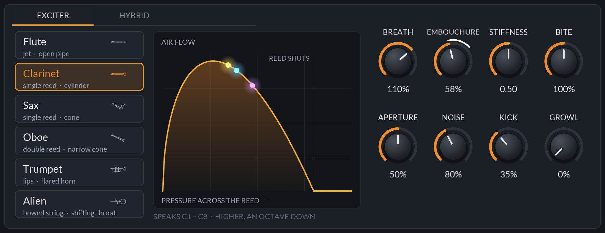
The graph is the exciter's valve: how much air passes (up) for the pressure across it (along). A reed's curve rises, turns over and shuts where the reed closes; the lips' curve opens instead; the flute's jet shows where it overblows. Each sounding note is a dot riding on the curve, in its own colour, so you can see a note being blown past the top and into the buzz.
| Control | Range | Default | What it does |
|---|---|---|---|
| Instrument | Flute, Clarinet, Sax, Oboe, Trumpet, Alien | Clarinet | The model. Every other setting is kept when you change it. |
| BREATH | 25 – 150% | 100% | How hard the player blows at full pressure (or full velocity). Above 100% every instrument can be overblown. MODROUTE |
| EMBOUCHURE | 0 – 100% | 50% | Lip and jaw: the jet's angle on the flute, the bite on a reed, the lips' tension on brass. MPE slide moves it. MODROUTE |
| STIFFNESS | 0.00 – 1.00 | 0.50 | How stiff the reed or lips are (the jet's gain on a flute). Stiff is bright and quick to shut; soft is dark and lazy. MODROUTE |
| BITE | 0 – 200% | 100% | The forte edge: the flute's 2nd harmonic, the reeds' edge, the brass blare. MODROUTE |
| APERTURE | 0 – 100% | 50% | How far the reed or lips stand open (the jet's width): wide is loud and free, narrow thin and focused. MODROUTE |
| NOISE | 0 – 200% | 100% | Breath noise and turbulence. Always a smaller share of the sound the softer it's blown. MODROUTE |
| KICK | 0 – 100% | 25% | The burst of pressure as the tongue lets the air go: the "t" at the start of a note. MODROUTE |
| GROWL | 0 – 100% | 0% | A rough flutter of the throat rides on the air, on any instrument; a hard-blown reed rasps more. MODROUTE |
On the Alien, the same knobs shape its voice instead: EMBOUCHURE is the jaw, STIFFNESS the vocal folds, BITE nasal below the middle and a brassy twang above it, APERTURE the lips from rounded to a grin, and KICK how hard words start. See Chapter 12.
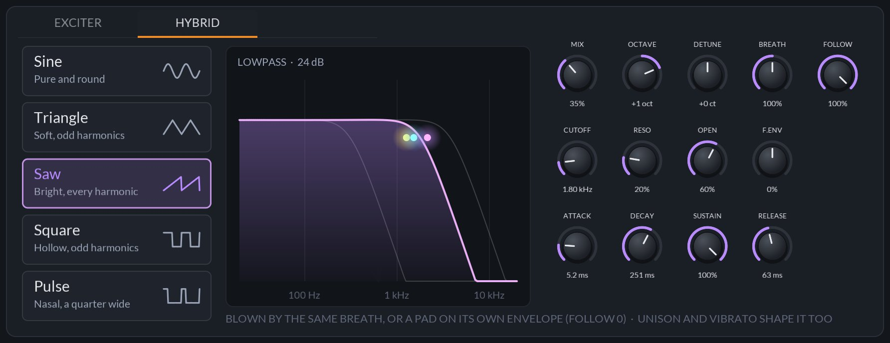
A plain subtractive voice, blown by the same breath and layered with the instrument: a wave through a 24 dB lowpass that follows the note half way. Unison and vibrato shape it too. It has an envelope of its own, so it can also be a pad under the instrument: at full FOLLOW it is blown like the instrument; turn FOLLOW down and the envelope plays it from the note's strike instead, swelling in and ringing on after the breath stops.
| Control | Range | Default | What it does |
|---|---|---|---|
| Wave | Sine, Triangle, Saw, Square, Pulse | Saw | The oscillator. |
| MIX | 0 – 100% | 0% | How much of it. At 0% it is off. MODROUTE |
| OCTAVE | −2 – +2 oct | 0 oct | Where it plays against the instrument. MOD |
| DETUNE | −50 – +50 ct | +0 ct | Fine offset, for beating against the instrument. MODROUTE |
| BREATH | 50 – 150% | 100% | How strongly its level follows the breath. MOD |
| CUTOFF | 80 Hz – 12 kHz | 1.80 kHz | The lowpass. MODROUTE |
| RESONANCE | 0 – 100% | 20% | The lowpass's peak. MODROUTE |
| OPEN | 0 – 100% | 60% | How far the breath opens the lowpass: soft is dark, hard is bright. MODROUTE |
| ATTACK | 1 ms – 10 s | 5.2 ms | The envelope's attack. MOD |
| DECAY | 1 ms – 10 s | 251 ms | The envelope's decay. MOD |
| SUSTAIN | 0 – 100% | 100% | The envelope's sustain. MOD |
| RELEASE | 1 ms – 10 s | 63 ms | The envelope's release, after the note ends. MOD |
| FOLLOW | 0 – 100% | 100% | How much its level still follows the breath, against the envelope. MOD |
| F.ENV | −100 – +100% | 0% | How far the envelope opens (or, below zero, closes) the lowpass. MOD |
The tube the sound rings in: its shape, its holes, what it's made of, and what's in the bell.
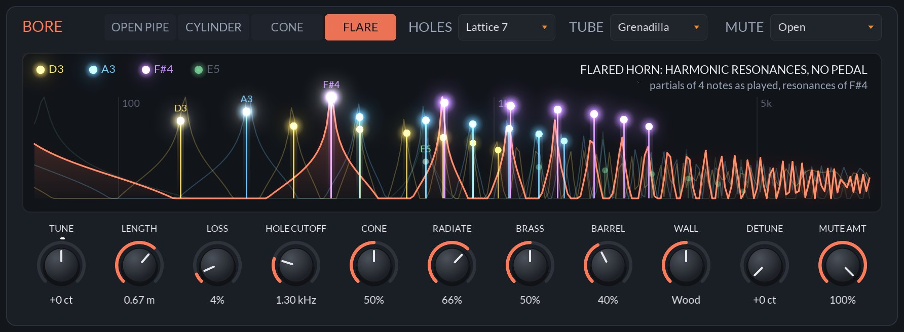
The graph is worked out from the same loop the model runs, so every knob on the card changes it. Peaks are where the tube rings; a note's partials that land on peaks are strong, those between them weak. The resonances drawn are the loudest note's. The tabs along the top (OPEN PIPE, CYLINDER, CONE, FLARE) show the instrument's family, and the title says what that means for its harmonics.
| Control | Range | Default | What it does |
|---|---|---|---|
| HOLES | Closed, Lattice 3, 5, 7, 9, Open | Lattice 7 | How many tone holes are open below the note. More open holes move the holes' cutoff up and radiate more highs: Closed is dark and veiled, Open bright. |
| TUBE | Grenadilla, Boxwood, Maple, Bamboo, Brass, Silver, Resin, Glass | Grenadilla | What it's made of. Each has its own body resonance and tilt, and soaks up more or less of every trip: wood warm and soft, metal and glass bright and ringing. |
| MUTE | Open, Straight, Cup, Harmon, Plunger, Bucket | Open | Something in or over the bell, on any instrument. |
| TUNE | −100 – +100 ct | +0 ct | Fine tuning. MODROUTE |
| LENGTH | 0.15 – 1.50 m | 0.67 m | The tube below the open holes, whose own resonances ring above the holes' cutoff, most with HOLES at Closed and not at all at Open. MOD |
| LOSS | 0 – 50% | 4% | What the bore loses each trip: softer, darker, slower to speak. MODROUTE |
| HOLE CUTOFF | 0.50 – 4.00 kHz | 1.30 kHz | Above it the tone holes let the sound out. The pitch stays put: the filter's delay is taken out of the bore. MODROUTE |
| CONE | 0 – 100% | 50% | Sax and oboe: how far the cone is cut short at the reed, from towards a cylinder to a full cone. Trumpet: how conical its bore is, towards a flugelhorn. Alien: how stiff its string is. MODROUTE |
| RADIATE | 0 – 100% | 66% | How the bell sends the highs out. MOD |
| BRASS | 0 – 100% | 50% | Trumpet only: how far the wave steepens into a blare. MODROUTE |
| BARREL | 0 – 100% | 40% | The mouthpiece's cavity. MOD |
| WALL | Metal, Resin, Wood, Cane, Bone | Wood (50%) | How much the walls soak up. MOD |
| DETUNE | 0 – 25 ct | +0 ct | Each note a little off, by up to this much: a section rather than one player. MODROUTE |
| MUTE AMT | 0 – 100% | 100% | How far the mute is in. Route slide or pressure to it to work a plunger. MODROUTE |
A mute does two things: it changes how the bell reflects, and it filters what comes out. Straight: lows cut and a nasal peak near 1.8 kHz. Cup: a cup over that, with a resonance near 900 Hz and the highs cut. Harmon: seals the bell and lets the sound out through its stem, a sharp resonance near 2 kHz over a weak fundamental: buzzy and distant. Plunger: a resonant lowpass that falls as it closes, the "wah", so route slide or pressure to MUTE AMT and work it like a hand. Bucket: felt that soaks up the highs, dark and soft. They work on every instrument: Hat Alto, Felt Clarinet and Snake Charmer put them on reeds.
The tongue and the vibrato: how a player starts, shapes and ends each note.
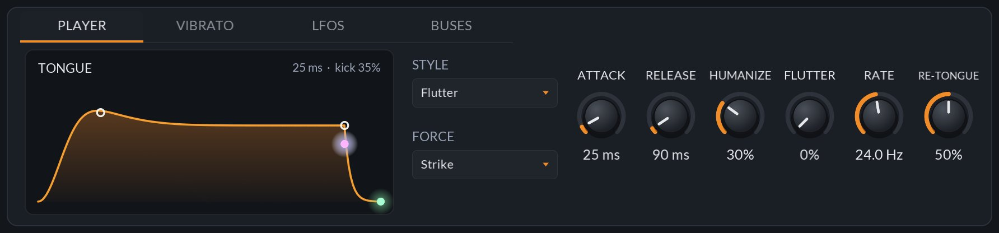
| Control | Range | Default | What it does |
|---|---|---|---|
| STYLE | Soft, Hard, Double, Flutter, Breath | Hard | How the note is tongued (below). |
| FORCE | Strike, Press | Strike | Where the tongue's force comes from: the velocity, or how hard the pressure arrives in the note's first few ms (Chapter 7). |
| ATTACK | 1 – 400 ms | 25 ms | How long the breath takes to arrive. MODROUTE |
| RELEASE | 5 – 2000 ms | 90 ms | How long it takes to stop. MODROUTE |
| HUMANIZE | 0 – 100% | 0% | Makes every note a little different in pitch, breath, attack and vibrato. MODROUTE |
| FLUTTER | 0 – 100% | 0% | Rolls the tongue through the note on any style. MODROUTE |
| RATE | 10 – 40 Hz | 24.0 Hz | How fast the flutter rolls. MODROUTE |
| RE-TONGUE | 0 – 100% | 50% | Tongues a held note again when its pressure dips quickly and comes back (below). At 0%, never. MODROUTE |
| Style | Sounds like | What it does |
|---|---|---|
| Soft | "da" | A gentle start, little burst. |
| Hard | "ta" | A crisp start with the full kick. The default. |
| Double | "ta-ka" | Every note tongued, even when slurred in LEGATO. |
| Flutter | a rolled R | Rolls the tongue through the note, at least half way whatever FLUTTER is set to. |
| Breath | "hhh" | No tongue at all: the note starts from the air alone. |
A wind player repeats a note without changing fingers by tonguing it again. With pressure, JBreath does the same: when a held note's pressure falls under a dip within 150 ms and comes at least half way back within 300 ms more, the note is tongued again, as hard as the pressure came back. A slow diminuendo and swell never counts. Turned up, a lighter dip is enough; at 0% it never happens. On a single key you can now play repeated notes the way a player does on one fingering.
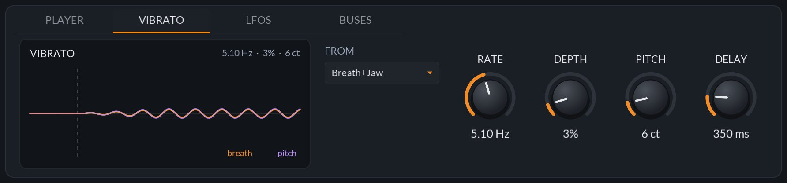
Vibrato grows in after DELAY, and its rate and depth wander a little as a player's do.
| Control | Range | Default | What it does |
|---|---|---|---|
| FROM | Breath, Jaw, Breath+Jaw, Lip | Breath | Where it comes from: the diaphragm (level and colour), the jaw (the embouchure, so pitch and colour), both, or the lip (pitch alone). |
| RATE | 2 – 9 Hz | 5.10 Hz | How fast. MODROUTE |
| DEPTH | 0 – 30% | 5% | How deep, from FROM. MODROUTE |
| PITCH | 0 – 50 ct | 0 ct | Pitch vibrato in cents, on top. MODROUTE |
| DELAY | 0 – 2000 ms | 350 ms | How long into the note before it grows in. MODROUTE |
The LFOS and BUSES tabs are part of the modulation system, in Chapter 11.
MAP any source onto any knob with a touch and a drag. Thirteen of the sources are your hands and the instrument's own breath.
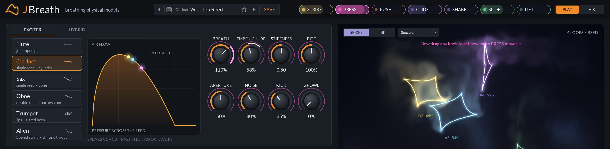
Outside MAP, right-click a knob to unmap every route into it. Hover a chip to read what its source is. Everything works per voice: PRESS on one note moves only that note.
New in 0.12.0: PUSH and SHAKE in the header, and FRAY in place of Vapor. Every breath source now runs 0 to 1 on every instrument, so a route sounds the same whichever instrument you pick.
| Source | Range | What it follows |
|---|---|---|
| THE PLAYER'S HANDS · IN THE HEADER | ||
| STRIKE | 0 – 1 | The note's velocity. |
| PRESS | 0 – 1 | Its pressure. |
| PUSH | 0 – 1 | How fast the pressure is rising: an accent, falling away once the finger stops pushing. Full at the whole range in 0.1 s. |
| GLIDE | −1 – +1 | Its pitch bend, full at two semitones whatever the bend range. |
| SHAKE | 0 – 1 | How much the finger is moving the pitch: its vibrato, or a bend on its way. Full at a quarter of a semitone. |
| SLIDE | 0 – 1 | Its slide (CC 74). |
| LIFT | 0 – 1 | Its release velocity, moving only once the note is let go. |
| THE BREATH · UNDER THE LOOPS, READ OFF EACH VOICE | ||
| LOOP | 0 – 1 | How hard it blows, from the lightest breath that sounds to the instrument's full breath, with its attack and release. |
| KNOT | 0 – 1 | How bright it is for its note: the share of the sound above its 4th harmonic. Holds as the note dies away. |
| FOLD | 0 – 1 | How far into the top of its breath, from mezzo forte to full: towards where it overblows. |
| REGISTER | 0 – 1 | How high it plays in the instrument's range. |
| FRAY | 0 – 1 | How far the sound is from a steady tone: breath noise, growl, flutter, the attack or a split note, whatever frays the loop. Holds as the note dies away. |
| DRAFT | −1 – +1 | A slow wandering draught of its own, carried from note to note. |
| GENERATORS AND BUSES · IN THE ROUTE LIST AND THE LFOS AND BUSES TABS | ||
| LFO 1, LFO 2 | −1 – +1 | Two LFOs (below). |
| SWELL | 0 – 1 | One contour over its time from each note's start (below). |
| KEY | −1 – +1 | The note, around middle C. |
| RANDOM | −1 – +1 | A fresh value for each note. |
| BUS 1 – 4 | −1 – +1 | The buses' outputs (below). |
LOOP, FOLD, KNOT and FRAY are measured from the breath and the sound, so routed onto BREATH (or anything that changes how hard it blows) they feed back. That can be useful: FOLD onto BREATH latches a note once it's overblown, and LOOP onto BREATH at −100% flattens the dynamics. If a patch runs away, look for a breath source routed to Breath.
A route can move any knob tagged ROUTE in this manual: the exciter, the player and vibrato, the bore's Tune, Loss, Hole Cutoff, Cone, Brass, Detune and Mute Amount, the hybrid voice, the LFO rates and Swell time, Transpose, Glide, Curve, Pan, Unison Detune, Air and Level, every Alien knob, Re-Tongue, and the four buses' Amount. Several routes into one knob add up, and the result is kept within the knob's range. Host modulation is added first.
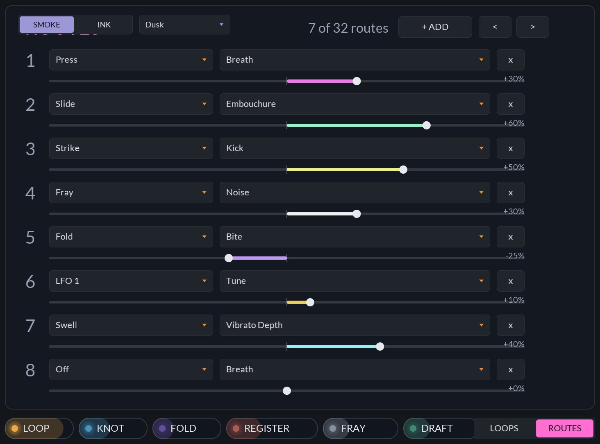
ROUTES, beside LOOPS under the stage, lists all 32 routes: each a source, a destination and an amount from −100% to +100%. Add, edit and remove them by hand here. A route's amount is a host parameter you can automate; its source and destination are not.
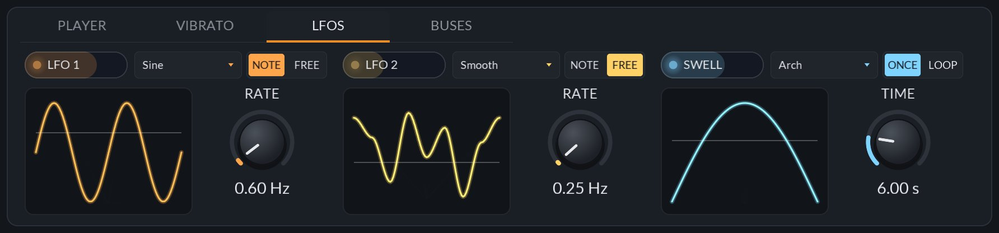
| Control | Range | Default | What it does |
|---|---|---|---|
| LFO shape | Sine, Triangle, Saw, Square, S&H, Smooth | Sine · Smooth | LFO 1's and LFO 2's wave. Smooth is a gliding random. |
| NOTE / FREE | Note, Free | Note · Free | Restart with each note, or run free, shared by every voice. |
| RATE | 0.02 – 20 Hz | 1.00 · 0.25 Hz | How fast. MODROUTE |
| Swell shape | Arch, Rise, Fall, Waves, Bloom, Tide | Arch | A rise and fall, a rise to stay, a fall, two humps, a quick bloom that settles, or a slow breath in and out. |
| ONCE / LOOP | Once, Loop | Once | Play the contour once per note, or keep repeating it. |
| TIME | 0.05 – 30 s | 3.00 s | How long the contour takes. MODROUTE |
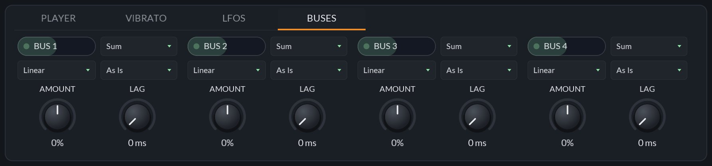
A bus combines several sources into one. Route sources onto a bus's AMOUNT; the bus mixes them, bends the result and lags it, and sends it on as a source of its own (BUS 1 to 4). For example, PRESS and REGISTER into a bus set to Multiply, routed to GROWL, makes only loud, high notes growl.
| Control | Range | Default | What it does |
|---|---|---|---|
| Mode | Sum, Multiply, Min, Max | Sum | How the routes onto it combine. |
| Curve | Linear, Exp, Log, S-Curve, Absolute | Linear | Bends the mix. |
| Polarity | As Is, Unipolar, Bipolar, Invert | As Is | Shifts or flips it. |
| AMOUNT | −100 – +100% | 0% | An offset, and where its inputs are routed. MODROUTE |
| LAG | 0 – 2000 ms | 0 ms | Smooths the output. MOD |
An instrument that sings words, a syllable a note: yours, typed in, or words of its own made-up language.
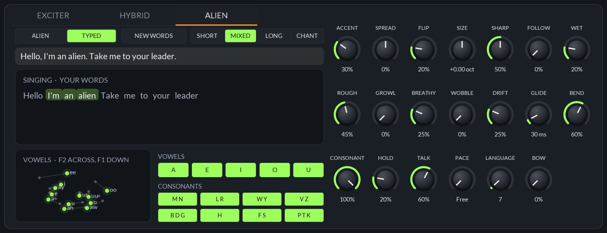
Its voice is a formant synthesizer, a cascade of eight resonances for the vowels with a nose and a mouth beside them for the consonants, sung by vocal folds that shut faster and brighter the harder they're blown. Each syllable runs as a plan: the last syllable's closing consonants, this one's opening ones, then its vowel, held as long as the note is. Let go, it says the closing consonants before it falls silent. A chord's notes sing the same syllable; in LEGATO, a slur runs one syllable straight into the next. The breath is how loud and how hard it sings, the velocity how hard it says the consonants. It was tuned by playing whole sentences through the plug-in to speech recognizers.
[HH AH0 L OW1], are sung as written. The words start from the top whenever the host starts playing, and are saved with the project.| Control | Range | Default | What it does |
|---|---|---|---|
| ACCENT | 0 – 100% | 0% | How far each syllable's vowel is bent from a human's, new each syllable. MODROUTE |
| SPREAD | −100 – +100% | 0% | Squeezes the resonances together (a muffled hum) or pushes them apart (glassy and thin). MODROUTE |
| FLIP | 0 – 100% | 0% | Turns the vowels round the middle of the vowel space; all the way, ee is where ah was. MODROUTE |
| SIZE | −1 – +1 oct | +0.00 oct | Every resonance up or down an octave. A quarter up with the notes up an octave is a woman's voice; a quarter down a big man's. MODROUTE |
| SHARP | 0 – 100% | 50% | How narrow the resonances are, up to a throat singer's whistles. MODROUTE |
| WET | 0 – 100% | 20% | Something moving in the throat: the resonances shiver and gurgle. MODROUTE |
| ROUGH | 0 – 100% | 45% | How unsteady the folds are, as a living voice's. At 0% it's a machine. MODROUTE |
| GROWL | 0 – 100% | 0% | A creature's rasp: a growl an octave under the note, a rattle, a creak. MODROUTE |
| FOLLOW | 0 – 100% | 0% | How far the throat follows the note: none is a singer's. MODROUTE |
| WOBBLE | 0 – 100% | 0% | Each resonance swings on a slow wave of its own. MODROUTE |
| DRIFT | 0 – 100% | 20% | How far the vowels wander on their own. MODROUTE |
| GLIDE | 5 – 400 ms | 30 ms | How long each vowel takes to arrive. MODROUTE |
| BEND | 0 – 100% | 60% | How far the throat follows a pitch bend, like a talk box's mouth. MODROUTE |
| BREATHY | 0 – 100% | 25% | How much air goes through the folds, from clear to a whisper. MODROUTE |
| CONSONANT | 0 – 100% | 100% | How strong the consonants are, from vowels only to every stop, hiss and hum. MODROUTE |
| HOLD | 0 – 100% | 20% | How long a diphthong holds its first vowel. MODROUTE |
| TALK · PACE | 0 – 100% · Free, 1/16 – 2 Bars | 50% · Free | How soon a held note goes on to the next syllable, chattering while held. Free (by TALK; under a fifth, never), or a note value at the host's tempo. Typed words go on only with a PACE set (on Free, a syllable a note), and the next note picks up where the held one got to. MODROUTE |
| VOWELS · CONSONANTS | each On / Off | all On | Which its own words use: A E I O U, and M N, L R, W Y, V Z, B D G, H, F S, P T K. |
EMBOUCHURE is the jaw, from nearly shut to wide open (slide opens the mouth). STIFFNESS is the vocal folds, from lax and hooting to pressed and buzzing. BITE sings through the nose below the middle and adds a brassy twang above it. APERTURE is the lips, from rounded and dark to a bright grin. KICK is how hard each word starts and its consonants hit, and LOSS on the bore a damped, muffled throat. Each changes its colour, not how loud it is.
BOW replaces the folds with a bowed string that sings the words: the breath is the bow's speed, BITE its weight, EMBOUCHURE where it crosses the string, STIFFNESS the hair's tension, APERTURE how wide it lies, and CONE how stiff the string is, from gut to a steel wire whose partials stretch apart like a bell's. Try Talking Bow.
High notes are sung as a singer sings them: from about E4 up, the first resonance rides above the note and the upper ones widen, so the top stays round rather than whistling. The ALIEN tab only shows when the Alien is the instrument.
Every voice drawn as a loop of its own sound, slowly turning, puffing smoke as it blows.
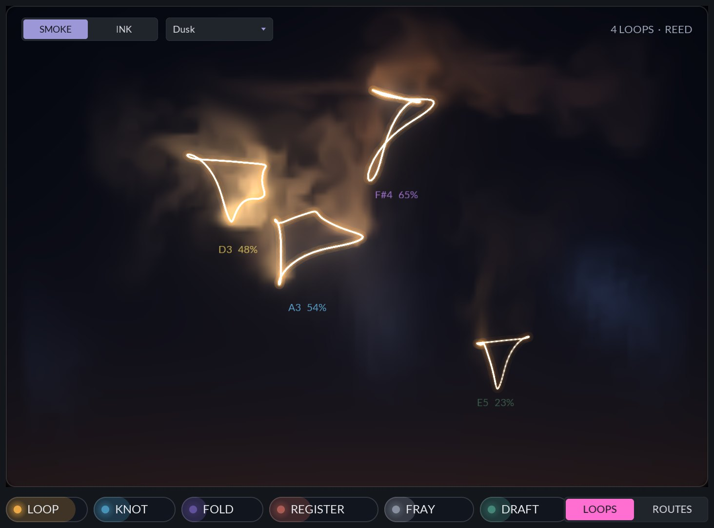
Each loop plots a voice's sound now against its sound a quarter of a period ago and half a period ago, in three dimensions, slowly turning. A steady tone draws a clean closed loop, its shape the tone's harmonics; growl, flutter, breath noise or a split note fray it. That fraying is what the FRAY source measures. Smoke comes off every loop as it blows, in the loop's own colour, cooling to blue mist as it rises and curls away.
Above the stage, SMOKE / INK picks the look. INK drops dye from the loops that sinks and spreads instead of glowing smoke.
The menu beside it, Colours, picks the voices' colour scheme. Each loop glows, and its smoke or ink comes off it, in its voice's colour, and the same colour marks that note everywhere else on the panel. There are eight: Spectrum (the default, one of each hue), Neon, Sunset, Ocean, Aurora, Pastel, Fire and Mono. It replaces 0.12.0's smoke palette menu.
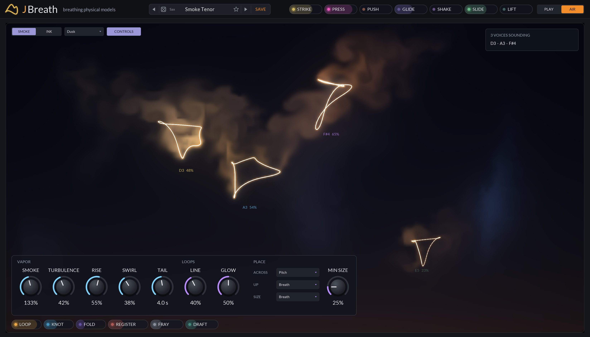
AIR in the header gives the loops the whole window; PLAY brings the panel back. CONTROLS opens the look's knobs over the view.
| Control | Range | Default | What it does |
|---|---|---|---|
| SMOKE | 0 – 300% | 133% | How much smoke the loops puff out. |
| TURBULENCE | 0 – 100% | 42% | How hard the air curls the smoke. |
| RISE | 0 – 100% | 55% | How fast it rises. |
| SWIRL | 0 – 100% | 38% | How tightly it curls into strands. |
| TAIL | 0.5 – 8.0 s | 4.0 s | How long it hangs. |
| LINE | 0 – 100% | 40% | The loops' line. |
| GLOW | 0 – 100% | 50% | How brightly loops and smoke are lit: 50% is the usual light, 100% four times it. |
| ACROSS · UP · SIZE | Pitch, Strike, Press, Slide, Breath, Random, Centre | Pitch · Breath · Breath | What places each loop across and up the stage, and what sets its size. |
| MIN SIZE | 10 – 100% | 25% | The smallest a loop gets, against the largest. |
The look is kept with the project, not with presets, so changing preset leaves it alone. Its knobs are not host parameters to automate.
The animation steps in time with the display and thins the smoke if frames run late, so the view stays smooth without taking time from the audio.
The voices, where they sit, and the room, the echo and the output they play into.
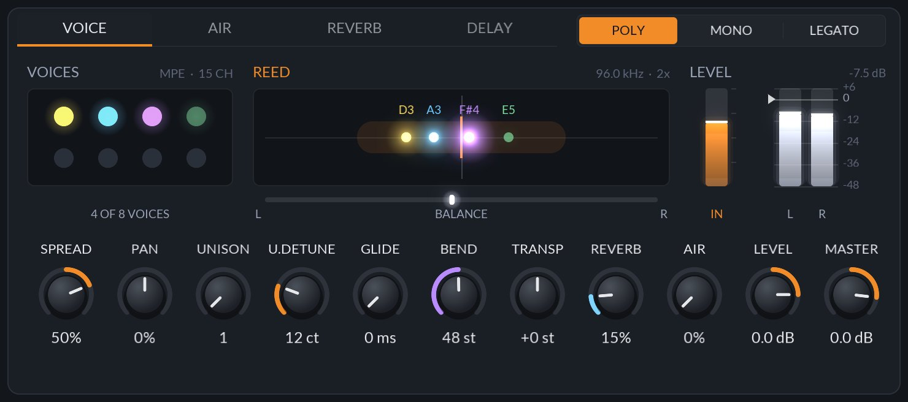
| Mode | Voices | What it does | |
|---|---|---|---|
| POLY | 8 | A ninth note takes the quietest released voice, or the oldest. | |
| MONO | 1 | The tongue stops the air between notes. Letting go goes back to the newest key still held. | |
| LEGATO | 1 | The fingers change and the air doesn't stop: a slur, with GLIDE setting how long the pitch takes to get there. The Double tongue style still tongues every note. | |
The tab shows the eight voices, lit while they sound; where each note sits in the stereo field, with the output's balance under it; and the meters, glowing as they rise: the breath coming in (IN), and the output left and right with the peak held (in dB at the top), red over 0 dB, with a notch where Master is set.
These stay on screen whichever tab is open.
| Control | Range | Default | What it does |
|---|---|---|---|
| SPREAD | −100 – +100% | 50% | Low notes left, high right, as across a section; below zero the other way round. MOD |
| PAN | −100 – +100% | 0% | Where the notes sit before the spread. Map Key, Slide or Random onto it to place each note. MODROUTE |
| UNISON | 1 – 4 | 1 | Copies of every voice, detuned against each other. MOD |
| U.DETUNE | 0 – 50 ct | 12 ct | How far the unison copies spread. MODROUTE |
| GLIDE | 0 – 1000 ms | 0 ms | How long the pitch takes to slide to a new note in LEGATO. MODROUTE |
| BEND | 1 – 96 st | 48 st | The MPE bend range of the note channels. MOD |
| TRANSP | −24 – +24 st | +0 st | Transpose. MODROUTE |
| REVERB | 0 – 100% | 15% | How much room. MOD |
| AIR | 0 – 100% | 0% | The breath heard around the instrument, not through it. MODROUTE |
| LEVEL | −60 – +12 dB | 0.0 dB | The patch's level, saved with presets. MODROUTE |
| MASTER | −36 – +6 dB | 0.0 dB | The output's level, before the limiter, so turning it up can't clip the output. The dice never touch it. MOD |
The AIR tab (where the breath comes from) is described in Chapter 7.
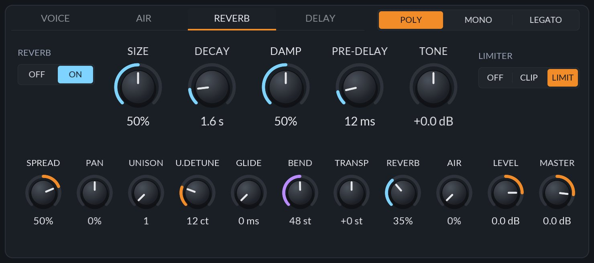
| Control | Range | Default | What it does |
|---|---|---|---|
| REVERB | Off, On | On | Switched off, the room's tail rings out rather than stopping. |
| SIZE | 0 – 100% | 50% | How big the room is. MOD |
| DECAY | 0.2 – 10.0 s | 1.6 s | How long it rings. MOD |
| DAMP | 0 – 100% | 50% | How fast the highs die. MOD |
| PRE-DELAY | 0 – 100 ms | 12 ms | Delay before the room answers. MOD |
| TONE | −12 – +12 dB | +0.0 dB | Darkens or brightens the whole output. MOD |
| LIMITER | Off, Clip, Limit | Limit | The very last stage, after Master. Off: nothing. Clip: overs saturate. Limit: a soft limiter that turns a loud chord down smoothly rather than letting it clip. It starts 5 dB under full scale and holds the loudest of it at −2 dBFS, with a soft knee, a 1 ms attack and a release that slows once it has been limiting a while, so a held chord doesn't pump; a soft clip after it catches the first instant of a loud note, so the output never reaches 0 dBFS. No latency, and anything under its knee passes untouched. (Projects saved with 0.12's Hard get this limiter.) |
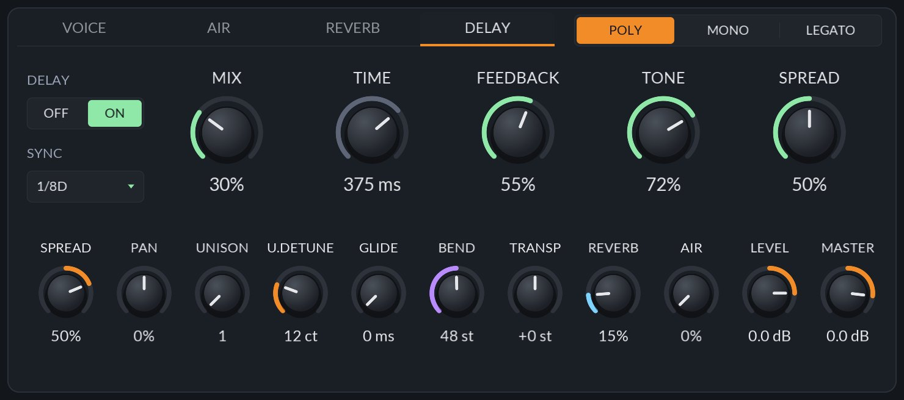
A stereo echo before the reverb, off until switched on.
| Control | Range | Default | What it does |
|---|---|---|---|
| DELAY | Off, On | Off | Switches the echo in. |
| SYNC | Free, 1/32 – 1/1, dotted and triplet | Free | A note value at the host's tempo, or Free to use TIME. |
| MIX | 0 – 100% | 30% | How loud the echoes are. MOD |
| TIME | 10 ms – 2 s | 375 ms | The echo time when SYNC is Free. MOD |
| FEEDBACK | 0 – 95% | 40% | How many echoes there are. MOD |
| TONE | 0 – 100% | 72% | How much darker each one gets. MOD |
| SPREAD | 0 – 100% | 50% | How far they bounce between left and right. MOD |
Eighty-seven factory presets, your own, and a die that builds new instruments.
Loading a preset sets every parameter except the AIR view's look, so nothing else carries over from the previous sound. The host sees the change as an ordinary edit, so it can be undone.
User presets are small text files with the extension .jbpreset, one line per parameter. They live in:
| macOS | ~/Library/Application Support/JBreath/Presets |
| Windows | %APPDATA%\JBreath\Presets |
| Linux | $XDG_CONFIG_HOME/JBreath/Presets (or ~/.config/JBreath/Presets) |
Copy files into this folder to share presets between machines; they appear the next time the menu opens. Favorites are kept beside it and shared by every JBreath you open.
Init, then eight to twenty-seven presets for each family. Each family starts from its most natural sound, the model with a player's vibrato and a little room, and runs through darker, breathier, brighter and harder variants, its relatives by Transpose, and its oddities. Every factory preset plays in tune at a usable level (tested).
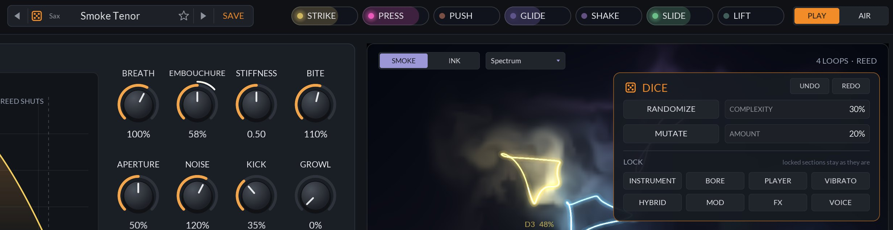
RANDOMIZE builds a new patch the way a player would pick one up: an instrument first, then its exciter, bore, tongue and vibrato within the ranges that sound for that instrument, and a name for it. COMPLEXITY says how much it reaches for: at 0 a plain, real instrument; higher brings growl or flutter, a mute, the hybrid layer, unison, LFOs and routes, the delay, wider bore settings and the Alien.
MUTATE nudges the patch you have by AMOUNT: what's off stays off, a choice moves only to a near one (a mute to the next mute, a tongue to its neighbour), and only a high amount changes the instrument or adds a route. UNDO and REDO step through what the dice replaced.
LOCK keeps a section as it is through both: INSTRUMENT, BORE, PLAYER, VIBRATO, HYBRID, MOD, FX and VOICE. The dice never touch Level, Master or the Limiter, the breath source and the rest of the MIDI and MPE setup, Transpose, Tune, or the AIR view's look. The complexity, amount and locks stay with the plug-in while the project is open, not with presets. Every patch the dice make plays in tune at a usable level (tested over many seeds).
Starting points for playing and for sound design. Begin from the preset named, then change only what is listed. A route is written SOURCE → destination, amount.
A sax that brightens and buzzes as you lean in, from a breath controller or MPE pressure.
Pushing into a note bites; easing in stays round.
Shake the key and the tone roughens with the vibrato.
Tongue a held trumpet note again with a quick dip in pressure, as a player does on one fingering.
Slide works the plunger like a hand over the bell.
A small reed section with a soft sine under it, swelling in after each note.
Two sources multiplied on a bus.
Once a note is blown past the top it stays there until you let go. Feedback on purpose.
Every parameter JBreath exposes to the host, grouped as the host lists them. Everything but the AIR view's look is automatable.
| Format | CLAP 1.2 instrument. Features: instrument, synthesizer, stereo. CLAP only: no VST3 or AU. Not supported in Ableton Live. |
| Notes | CLAP notes, MIDI and MIDI MPE. CLAP note expressions: tuning, pressure, brightness. Polyphonic aftertouch, channel pressure, CC 2 (breath), CC 74 (slide), CC 64 (sustain), RPN 0 (bend range), MPE Configuration Message. |
| Voices | 8, with up to 4 unison copies each. Poly, Mono and Legato. |
| Output | Stereo. |
| Platforms | macOS universal (10.15+ Intel, 11+ Apple Silicon), Windows (64-bit), Linux (64-bit). |
| Synthesis | Digital waveguides with nonlinear exciters: air jet, single reed, cane reed, double reed, lips, vocal folds or bowed string over a formant synthesizer. |
| Internal rate | 88.2 kHz or more (2× at 44.1 and 48 kHz), decimated once. |
| Tuning | Every note of every model within a cent, measured offline and corrected for breath. |
| Modulation | 22 sources, 32 routes, 4 buses, 2 LFOs and a Swell contour, per voice. |
| Effects | Stereo delay (10 ms to 2 s, synced or free), room reverb, output tone, limiter. |
| Tail | Reported to the host from the release, the room and the delay. |
| Presets | 87 factory presets; user presets as .jbpreset text files. |
| State | Saved with the host project, including the preset name, the Alien's typed words and the AIR view's look. |
| Panel | 1648 × 940 at 100%, scalable. |
| Symptom | What to check |
|---|---|
| JBreath doesn't appear in my host | Your host must load CLAP plug-ins; Ableton Live does not. On macOS the download may be quarantined: see the warning in Chapter 2, then rescan. |
| Notes don't sound, or only on hard hits | With BREATH FROM at PRESS or INPUT, a note with no pressure or Breath In blows nothing. Set AUTO. Check BREATH isn't turned right down, and that CURVE isn't very high for a light-touch controller. |
| Pressure does nothing | Check your host passes aftertouch or MPE to the plug-in, and that BREATH FROM is AUTO, PRESS or MIX. |
| Bends are far too wide or too narrow | BEND on the voice card must match your controller's MPE bend range (48 is the standard). A controller that sends RPN 0 sets it for you. |
| A note splits, squeals or jumps a register | That's overblowing, as on the real instrument. Lower BREATH, or EMBOUCHURE on the flute; check for a breath source routed to Breath. |
| Repeated notes when I didn't mean them | RE-TONGUE is tonguing quick dips in your pressure. Turn it down, or to 0%. |
| A patch runs away or latches loud | A breath source (LOOP, FOLD, KNOT, FRAY) is routed to Breath and feeding back. Open ROUTES and lower it. |
| It sounds out of tune | Check TUNE, TRANSP, DETUNE, U.DETUNE, HUMANIZE and the vibrato's PITCH. Every note is in tune with these at zero. |
| My user presets are missing | Check the preset folder for your OS (Chapter 15). Files must end in .jbpreset. |
| Bore | The tube the sound rings in, modelled as delay lines carrying the wave down and back. |
| Exciter | The part the player blows into: a reed, the lips, an air jet or vocal folds. A valve the breath drives. |
| Waveguide | A way of modelling a tube or string with delay lines and filters, so the sound travels in it as in the real one. |
| Impedance | How hard the bore resists air at each frequency. Its peaks are the notes it can play. |
| Overblow | Blowing hard enough that the instrument jumps to a higher resonance: a split note or the next register. |
| Embouchure | The lips, jaw and the way they meet the instrument. |
| MPE | MIDI Polyphonic Expression: each note on its own channel, so each has its own bend, pressure and slide. |
| Formant | A resonance of the throat and mouth. Vowels are told apart by where their formants are. |
| Route | A link from a modulation source to a knob, with an amount. |